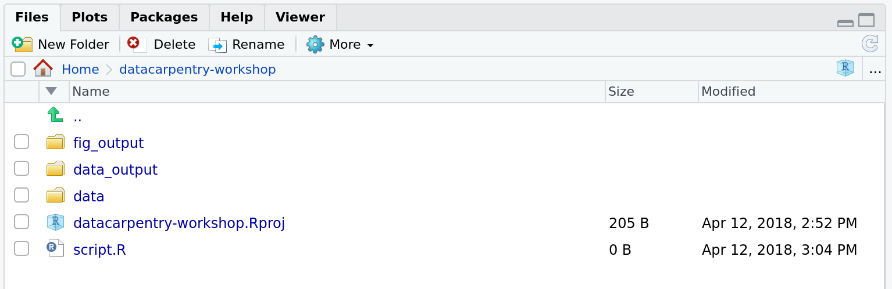

Chapter 2 R and RStudio
Learning Objectives
Describe the purpose of the RStudio Script, Console, Environment, and Plots panes.
Organize files and directories for a set of analyses as an R project, and understand the purpose of the working directory.
Use the built-in RStudio help interface to search for more information on R functions.
Demonstrate how to provide sufficient information for troubleshooting with the R user community.
2.1 What is R? What is RStudio?
The term R is used to refer to both the programming language, the environment for statistical computing and the software that interprets the scripts written using it.
RStudio is a very popular way to not only write your R scripts but also to interact with the R software3 As opposed to using R directly from the command line console. There exist other software that interface and integrate with R, but RStudio is particularly well suited for beginners and while providing numerous very advanced features.. To function correctly, RStudio needs R and therefore both need to be installed on your computer.
The RStudio IDE Cheat Sheet provides much more information that will be covered here, but can be useful to learn keyboard shortcuts and discover new features.
Other RStudio Cheat sheets are available for specific topics.
2.2 Why learn R?
R does not involve lots of pointing and clicking, and that’s a good thing
The learning curve might be steeper than with other software, but with R, the results of your analysis do not rely on remembering a succession of pointing and clicking, but instead on a series of written commands, and that’s a good thing! So, if you want to redo your analysis because you collected more data, you don’t have to remember which button you clicked in which order to obtain your results; you just have to run your script again.
Working with scripts makes the steps you used in your analysis clear, and the code you write can be inspected by someone else who can give you feedback and spot mistakes.
Working with scripts forces you to have a deeper understanding of what you are doing, and facilitates your learning and comprehension of the methods you use.
R code is great for reproducibility
Reproducibility is when someone else (including your future self) can obtain the same results from the same dataset when using the same analysis.
R integrates with other tools to generate manuscripts from your code. If you collect more data, or fix a mistake in your dataset, the figures and the statistical tests in your manuscript are updated automatically.
An increasing number of journals and funding agencies expect analyses to be reproducible, so knowing R will give you an edge with these requirements.
We will learn more about reproducibility and reproducible research in chapter 8.
R is interdisciplinary and extensible
With 10000+ packages4 i.e. add-ons that confer R with new functionality, such as bioinformatics data analysis - see chapter 9 that can be installed to extend its capabilities, R provides a framework that allows you to combine statistical approaches from many scientific disciplines to best suit the analytical framework you need to analyze your data. For instance, R has packages for image analysis, GIS, time series, population genetics, and a lot more.
Figure 2.1: Exponential increase of the number of packages available on CRAN, the Comprehensive R Archive Network. From the R Journal, Volume 10/2, December 2018.
, the Comprehensive R Archive Network. From the R Journal, Volume 10/2, December 2018.](figs/cran.png)
R works on data of all shapes and sizes
The skills you learn with R scale easily with the size of your dataset. Whether your dataset has hundreds or millions of lines, it won’t make much difference to you.
R is designed for data analysis. It comes with special data structures and data types that make handling of missing data and statistical factors convenient.
R can connect to spreadsheets, databases, and many other data formats, on your computer or on the web.
R produces high-quality graphics
The plotting functionalities in R are endless, and allow you to adjust any aspect of your graph to convey most effectively the message from your data.
R has a large and welcoming community
Thousands of people use R daily. Many of them are willing to help you through mailing lists and websites such as Stack Overflow, or on the RStudio community. These broad user community extends to specialised areas such as bioinformatics.
Not only is R free, but it is also open-source and cross-platform
Anyone can inspect the source code to see how R works. Because of this transparency, there is less chance for mistakes, and if you (or someone else) find some, you can report and fix bugs.
2.3 Knowing your way around RStudio
Let’s start by learning about RStudio, which is an Integrated Development Environment (IDE) for working with R.
The RStudio IDE open-source product is free under the Affero General Public License (AGPL) v3. The RStudio IDE is also available with a commercial license and priority email support from RStudio, Inc.
We will use RStudio IDE to write code, navigate the files on our computer, inspect the variables we are going to create, and visualise the plots we will generate. RStudio can also be used for other things (e.g., version control, developing packages, writing Shiny apps) that we will not cover during the workshop.
Figure 2.2: RStudio interface screenshot. Clockwise from top left: Source, Environment/History, Files/Plots/Packages/Help/Viewer, Console.

RStudio is divided into 4 “Panes”:
- the Source for your scripts and documents (top-left, in the default layout)
- your Environment/History (top-right),
- your Files/Plots/Packages/Help/Viewer (bottom-right), and
- the R Console (bottom-left).
The placement of these panes and their content can be customised (see
menu, Tools -> Global Options -> Pane Layout).
One of the advantages of using RStudio is that all the information you need to write code is available in a single window. Additionally, with many shortcuts, autocompletion, and highlighting for the major file types you use while developing in R, RStudio will make typing easier and less error-prone.
2.4 Getting set up
It is good practice to keep a set of related data, analyses, and text self-contained in a single folder, called the working directory. All of the scripts within this folder can then use relative paths to files that indicate where inside the project a file is located (as opposed to absolute paths, which point to where a file is on a specific computer). Working this way makes it a lot easier to move your project around on your computer and share it with others without worrying about whether or not the underlying scripts will still work.
RStudio provides a helpful set of tools to do this through its “Projects” interface, which not only creates a working directory for you, but also remembers its location (allowing you to quickly navigate to it) and optionally preserves custom settings and open files to make it easier to resume work after a break. Go through the steps for creating an “R Project” for this tutorial below.
- Start RStudio.
- Under the
Filemenu, click onNew project. ChooseNew directory, thenNew project. - Enter a name for this new folder (or “directory”), and choose a
convenient location for it. This will be your working directory
for this session (or whole course) (e.g.,
wsbim1207). - Click on
Create project. - (Optional) Set Preferences to ‘Never’ save workspace in RStudio.
RStudio’s default preferences generally work well, but saving a workspace to .RData can be cumbersome, especially if you are working with larger datasets. To turn that off, go to Tools –> ‘Global Options’ and select the ‘Never’ option for ‘Save workspace to .RData’ on exit.’
Figure 2.3: Set ‘Save workspace to .RData on exit’ to ‘Never’

To avoid character encoding issue between Windows and other operating systems, we are going to set UTF-8 by default:
Figure 2.4: Set the default text encoding to UTF-8 to save us headache in the coming future. (Figure from the link above).

2.4.1 Organising your working directory
Using a consistent folder structure across your projects will help keep things organised, and will also make it easy to find/file things in the future. This can be especially helpful when you have multiple projects. In general, you may create directories (folders) for scripts, data, and documents.
-
data/Use this folder to store your raw data and intermediate datasets you may create for the need of a particular analysis. For the sake of transparency and provenance, you should always keep a copy of your raw data accessible and do as much of your data cleanup and preprocessing programmatically (i.e., with scripts, rather than manually) as possible. Separating raw data from processed data is also a good idea. For example, you could have filesdata/raw/data1.txtand...data2.txtkept separate from adata/processed/norm_data.csvfile generated by thescripts/01_preprocess_all_data.Rscript. -
documents/This would be a place to keep outlines, drafts, and other text. -
scripts/(orsrc) This would be the location to keep your R scripts for different analyses or plotting, and potentially a separate folder for your functions (more on that later).
You may want additional directories or sub-directories depending on your project needs, but these should form the backbone of your working directory.
Figure 2.5: Example of a working directory structure.

For this course, we will need a data/ folder to store our raw data,
and we will use data_output/ for when we learn how to export data as
CSV files, and fig_output/ folder for the figures that we will save.
► Question
Under the Files tab on the right of the screen, click on New Folder and
create a folder named data within your newly created working directory
(e.g., ~/wsbim1207/data). (Alternatively, type dir.create("data") at
your R console.) Repeat these operations to create a data_output/ and a
fig_output folders.
We are going to keep the script in the root of our working directory because we are only going to use one file and it will make things easier.
Your working directory should now look like this:
Figure 2.6: How it should look like at the beginning of this lesson
Project management is also applicable to bioinformatics projects, of course5 In this course, we consider bioinformatics as data science applied to biological or bio-medical data.. William Noble (Noble (2009Noble, William Stafford. 2009. “A Quick Guide to Organizing Computational Biology Projects.” PLOS Computational Biology 5 (7): 1–5. https://doi.org/10.1371/journal.pcbi.1000424.)) proposes the following directory structure:
Directory names are in large typeface, and filenames are in smaller typeface. Only a subset of the files are shown here. Note that the dates are formatted
<year>-<month>-<day>so that they can be sorted in chronological order. The source codesrc/ms-analysis.cis compiled to createbin/ms-analysisand is documented indoc/ms-analysis.html. TheREADMEfiles in the data directories specify who downloaded the data files from what URL on what date. The driver scriptresults/2009-01-15/runallautomatically generates the three sub-directories split1, split2, and split3, corresponding to three cross-validation splits. Thebin/parse-sqt.pyscript is called by both of therunalldriver scripts.
Figure 2.7: Directory structure for a sample bioinformatics project.

The most important aspect of a well defined and well documented project directory is to enable someone unfamiliar with the project6 That someone could be, and very likely will be your future self, a couple of months or years after the analyses were run. to
understand what the project is about, what data are available, what analyses were run, and what results were produced and, most importantly to
repeat the analysis over again - with new data, or changing some analysis parameters.
2.4.2 The working directory
The working directory is an important concept to understand. It is the place from where R will be looking for and saving the files. When you write code for your project, it should refer to files in relation to the root of your working directory and only need files within this structure with relative paths.
Using RStudio projects makes this easy and ensures that your working
directory is set properly. If you need to check it, you can use
getwd(). If for some reason your working directory is not what it
should be, you can change it in the RStudio interface by navigating in
the file browser where your working directory should be, and clicking
on the blue gear icon More, and select Set As Working Directory.
Alternatively you can use setwd("/path/to/working/directory") to
reset your working directory. However, your scripts should not include
this line because it will fail on someone else’s computer.
Example
The schema below represents the working directory wsbim1207 with the
data and fig_output sub-directories, and 2 files in the latter:
wsbim1207/data/
/fig_output/fig1.pdf
/fig_output/fig2.pngFrom the working directory (
wsbi1207), we refer to thefig1. file using the relative pathfig_output/fig1.pdfor the absolute path/home/user/wsbim1207/fig_output/fig1.pdf.From the
datadirectory, we use the relative path../fig_output/fig1.pdfor the same absolute path/home/user/wsbim1207/fig_output/fig1.pdf.
2.5 Interacting with R
The basis of programming is that we write down instructions for the computer to follow, and then we tell the computer to follow those instructions. We write, or code, instructions in R because it is a common language that both the computer and we can understand. We call the instructions commands and we tell the computer to follow the instructions by executing (also called running) those commands.
There are two main ways of interacting with R: by using the
console or by using scripts (plain text files that contain
your code). The console pane (in RStudio, the bottom left panel) is
the place where commands written in the R language can be typed and
executed immediately by the computer. It is also where the results
will be shown for commands that have been executed. You can type
commands directly into the console and press Enter to execute those
commands, but they will be forgotten when you close the session.
Because we want our code and workflow to be reproducible, it is better to type the commands we want in the script editor, and save the script. This way, there is a complete record of what we did, and anyone (including our future selves!) can easily replicate the results on their computer.
RStudio allows you to execute commands directly from the script editor
by using the Ctrl + Enter shortcut (on Macs, Cmd + Return will
work, too). The command on the current line in the script (indicated
by the cursor) or all of the commands in the currently selected text
will be sent to the console and executed when you press Ctrl +
Enter. You can find other keyboard shortcuts in this RStudio
cheatsheet about the RStudio
IDE.
At some point in your analysis you may want to check the content of a
variable or the structure of an object, without necessarily keeping a
record of it in your script. You can type these commands and execute
them directly in the console. RStudio provides the Ctrl + 1 and
Ctrl + 2 shortcuts allow you to jump between the script and the
console panes.
If R is ready to accept commands, the R console shows a > prompt. If
it receives a command (by typing, copy-pasting or sent from the script
editor using Ctrl + Enter), R will try to execute it, and when
ready, will show the results and come back with a new > prompt to
wait for new commands.
If R is still waiting for you to enter more data because it isn’t
complete yet, the console will show a + prompt. It means that you
haven’t finished entering a complete command. This is because you have
not ‘closed’ a parenthesis or quotation, i.e. you don’t have the same
number of left-parentheses as right-parentheses, or the same number of
opening and closing quotation marks. When this happens, and you
thought you finished typing your command, click inside the console
window and press Esc; this will cancel the incomplete command and
return you to the > prompt.
2.6 How to learn more during and after the course?
The material we cover during this course will give you an initial taste of how you can use R to analyse data for your own research. However, you will need to learn more to do advanced operations such as cleaning your dataset, using statistical methods, or creating beautiful graphics7 We will introduce most of these (except statistics) here, but will only manage to scratch the surface of the wealth of what is possible to do with R.. The best way to become proficient and efficient at R, as with any other tool, is to use it to address your actual research questions. As a beginner, it can feel daunting to have to write a script from scratch, and given that many people make their code available online, modifying existing code to suit your purpose might make it easier for you to get started.

2.7 Seeking help
Use the built-in RStudio help interface to search for more information on R functions
Figure 2.8: RStudio help interface.

One of the fastest ways to get help, is to use the RStudio help interface. This panel by default can be found at the lower right hand panel of RStudio. As seen in the screenshot, by typing the word “Mean”, RStudio tries to also give a number of suggestions that you might be interested in. The description is then shown in the display window.
I know the name of the function I want to use, but I’m not sure how to use it
If you need help with a specific function, let’s say barplot(), you
can type:
If you just need to remind yourself of the names of the arguments, you can use:
I want to use a function that does X, there must be a function for it but I don’t know which one…
If you are looking for a function to do a particular task, you can use the
help.search() function, which is called by the double question mark ??.
However, this only looks through the installed packages for help pages with a
match to your search request
If you can’t find what you are looking for, you can use the rdocumentation.org website that searches through the help files across all packages available.
Finally, a generic Google or internet search “R <task>” will often either send you to the appropriate package documentation or a helpful forum where someone else has already asked your question.
I am stuck… I get an error message that I don’t understand
Start by googling the error message. However, this doesn’t always work very well because often, package developers rely on the error catching provided by R. You end up with general error messages that might not be very helpful to diagnose a problem (e.g. “subscript out of bounds”). If the message is very generic, you might also include the name of the function or package you’re using in your query.
However, you should check Stack Overflow. Search using the [r] tag. Most
questions have already been answered, but the challenge is to use the right
words in the search to find the
answers:
http://stackoverflow.com/questions/tagged/r
The Introduction to R can also be dense for people with little programming experience but it is a good place to understand the underpinnings of the R language.
The R FAQ is dense and technical but it is full of useful information.
Asking for help
The key to receiving help from someone is for them to rapidly grasp your problem. You should make it as easy as possible to pinpoint where the issue might be.
Try to use the correct words to describe your problem. For instance, a package is not the same thing as a library. Most people will understand what you meant, but others have really strong feelings about the difference in meaning. The key point is that it can make things confusing for people trying to help you. Be as precise as possible when describing your problem.
If possible, try to reduce what doesn’t work to a simple reproducible example. If you can reproduce the problem using a very small data frame instead of your 50000 rows and 10000 columns one, provide the small one with the description of your problem. When appropriate, try to generalise what you are doing so even people who are not in your field can understand the question. For instance instead of using a subset of your real dataset, create a small (3 columns, 5 rows) generic one. For more information on how to write a reproducible example see this article by Hadley Wickham.
To share an object with someone else, if it’s relatively small, you
can use the function dput(). It will output R code that can be used
to recreate the exact same object as the one in memory:
## iris is an example data frame that comes with R and head() is a
## function that returns the first part of the data frame
dput(head(iris))## structure(list(Sepal.Length = c(5.1, 4.9, 4.7, 4.6, 5, 5.4),
## Sepal.Width = c(3.5, 3, 3.2, 3.1, 3.6, 3.9), Petal.Length = c(1.4,
## 1.4, 1.3, 1.5, 1.4, 1.7), Petal.Width = c(0.2, 0.2, 0.2,
## 0.2, 0.2, 0.4), Species = structure(c(1L, 1L, 1L, 1L, 1L,
## 1L), levels = c("setosa", "versicolor", "virginica"), class = "factor")), row.names = c(NA,
## 6L), class = "data.frame")If the object is larger, provide either the raw file (i.e., your CSV file) with your script up to the point of the error (and after removing everything that is not relevant to your issue). Alternatively, in particular if your question is not related to a data frame, you can save any R object to a file8 See sections 4.6 and 9.4.1 for more details and examplesabout exporting and saving data.:
The content of this file is however not human readable and cannot be
posted directly on Stack Overflow. Instead, it can be sent to someone
by email who can read it with the readRDS() command (here it is
assumed that the downloaded file is in a Downloads folder in the
user’s home directory):
Last, but certainly not least, always include the output of sessionInfo()
as it provides critical information about your platform, the versions of R and
the packages that you are using, and other information that can be very helpful
to understand your problem.
## R version 4.5.0 (2025-04-11)
## Platform: x86_64-pc-linux-gnu
## Running under: Ubuntu 24.04.2 LTS
##
## Matrix products: default
## BLAS: /opt/R-4.5/lib/R/lib/libRblas.so
## LAPACK: /opt/R-4.5/lib/R/lib/libRlapack.so; LAPACK version 3.12.1
##
## locale:
## [1] LC_CTYPE=en_US.UTF-8 LC_NUMERIC=C
## [3] LC_TIME=en_US.UTF-8 LC_COLLATE=en_US.UTF-8
## [5] LC_MONETARY=en_US.UTF-8 LC_MESSAGES=en_US.UTF-8
## [7] LC_PAPER=en_US.UTF-8 LC_NAME=C
## [9] LC_ADDRESS=C LC_TELEPHONE=C
## [11] LC_MEASUREMENT=en_US.UTF-8 LC_IDENTIFICATION=C
##
## time zone: Europe/Brussels
## tzcode source: system (glibc)
##
## attached base packages:
## [1] stats graphics grDevices utils datasets methods base
##
## loaded via a namespace (and not attached):
## [1] cli_3.6.5 knitr_1.50 rlang_1.1.6 xfun_0.52
## [5] stringi_1.8.7 png_0.1-8 jsonlite_2.0.0 glue_1.8.0
## [9] htmltools_0.5.8.1 sass_0.4.10 msmbstyle_0.0.22 rmarkdown_2.29
## [13] evaluate_1.0.3 jquerylib_0.1.4 fastmap_1.2.0 yaml_2.3.10
## [17] lifecycle_1.0.4 bookdown_0.34.2 stringr_1.5.1 compiler_4.5.0
## [21] rstudioapi_0.17.1 digest_0.6.37 R6_2.6.1 magrittr_2.0.3
## [25] bslib_0.9.0 tools_4.5.0 xml2_1.3.8 cachem_1.1.0Where to ask for help?
- The person sitting next to you during the course. Don’t hesitate to talk to your neighbour during the workshop, compare your answers, and ask for help.
- Your friendly colleagues: if you know someone with more experience than you, they might be able and willing to help you.
- Stack Overflow: if your question hasn’t been answered before and is well crafted, chances are you will get an answer in less than 5 min. Remember to follow their guidelines on how to ask a good question.
- The R-help mailing list: it is read by a lot of people (including most of the R core team), a lot of people post to it, but the tone can be pretty dry, and it is not always very welcoming to new users. If your question is valid, you are likely to get an answer very fast but don’t expect that it will come with smiley faces. Also, here more than anywhere else, be sure to use correct vocabulary (otherwise you might get an answer pointing to the misuse of your words rather than answering your question). You will also have more success if your question is about a base function rather than a specific package.
- If your question is about a specific package, see if there is a
mailing list for it. Usually it’s included in the DESCRIPTION file
of the package that can be accessed using
packageDescription("name-of-package"). You may also want to try to email the author of the package directly, or open an issue on the code repository (e.g., GitHub). - There are also some topic-specific mailing lists (GIS, phylogenetics, etc…), the complete list is here.
More resources
The Posting Guide for the R mailing lists.
How to ask for R help useful guidelines
This blog post by Jon Skeet has quite comprehensive advice on how to ask programming questions.
The reprex package is very helpful to create reproducible examples when asking for help. The rOpenSci community call “How to ask questions so they get answered” (GitHub link and video recording) includes a presentation of the reprex package and of its philosophy.
2.8 R packages
R packages need to be : (1) installed (+ their dependencies), and (2) loaded in your environment
2.8.1 Loading packages
As we have seen above, R packages play a fundamental role in R. The
make use of a package’s functionality, assuming it is installed, we
first need to load it to be able to use it. This is done with the
library() function. Below, we load ggplot2.
2.8.2 Installing packages
The default package repository is The Comprehensive R Archive
Network (CRAN), and any package that is available on CRAN can be
installed with the install.packages() function. Below, for example,
we install the dplyr package that we will learn about late.
This command will install the dplyr package as well as all its
dependencies, i.e. all the packages that it relies on to function.
GitHub is a general-purpose online software
project repository and is well suited for R package development. To
install a package from GitHub, one can use the install_github()
function from the remotes package or install() the BiocManager
package. We will use the latter, as it is also the function that
allows to install packages from the
Bioconductor project, that we will
discuss in section 9.3. Below we first install
remotes and BiocManager from CRAN (as show above), then we install
rWSBIM1207 directly from the UCLouvain-CBIO/rWSBIM1207 GitHub
repository.
Page built: 2025-06-16 using R version 4.5.0 (2025-04-11)